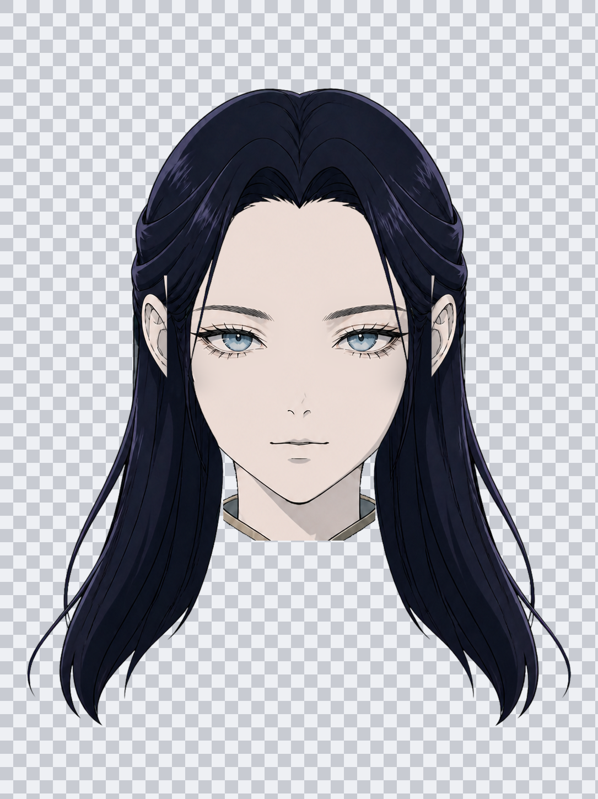
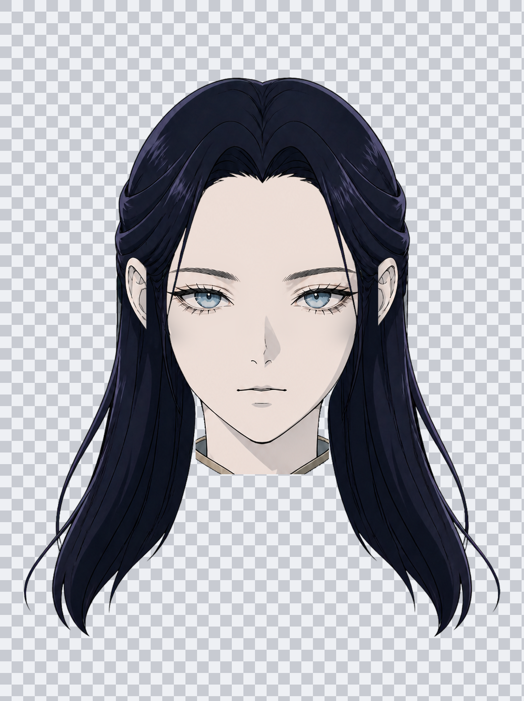
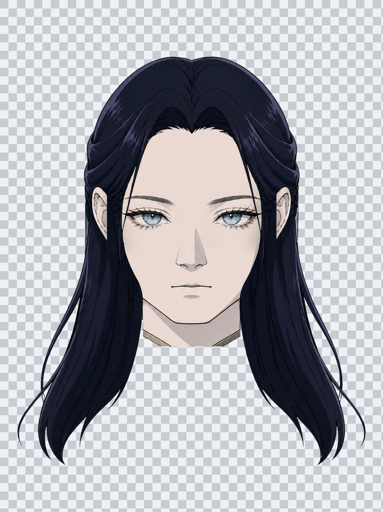
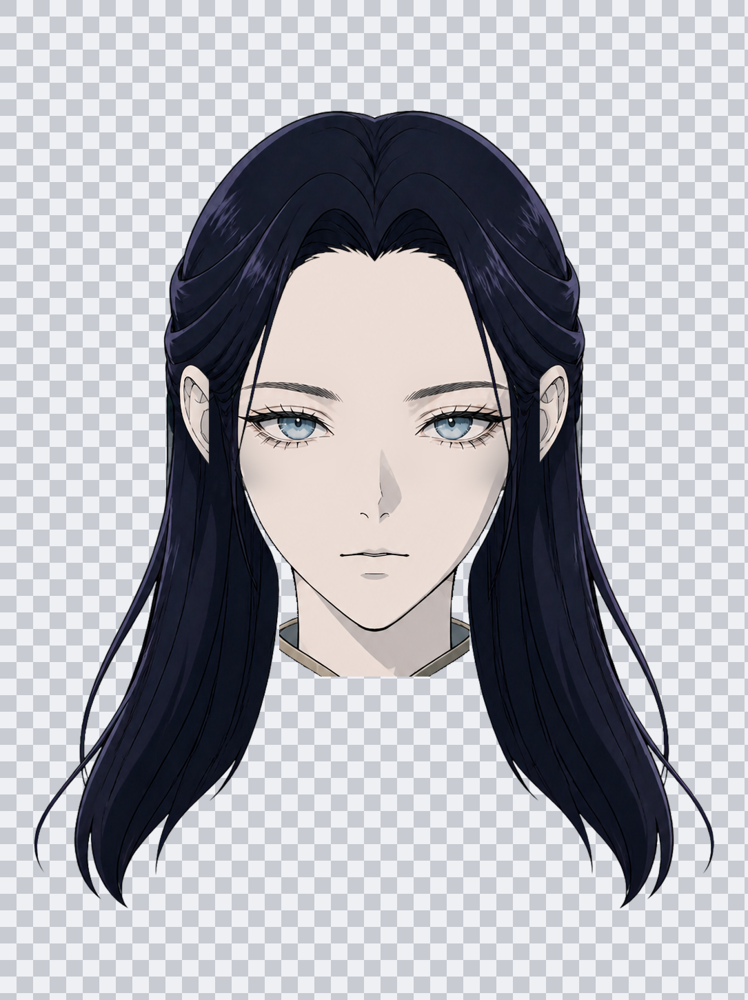
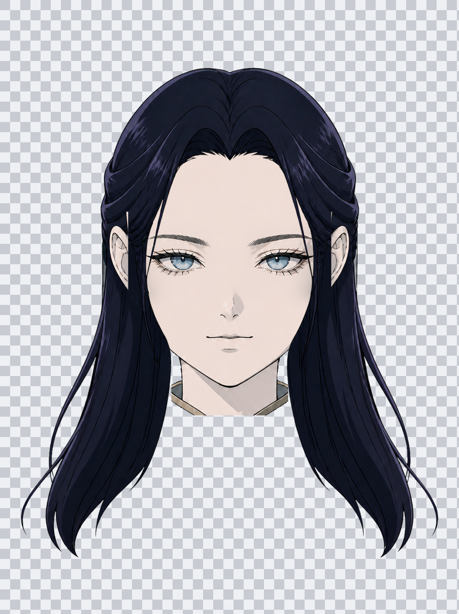
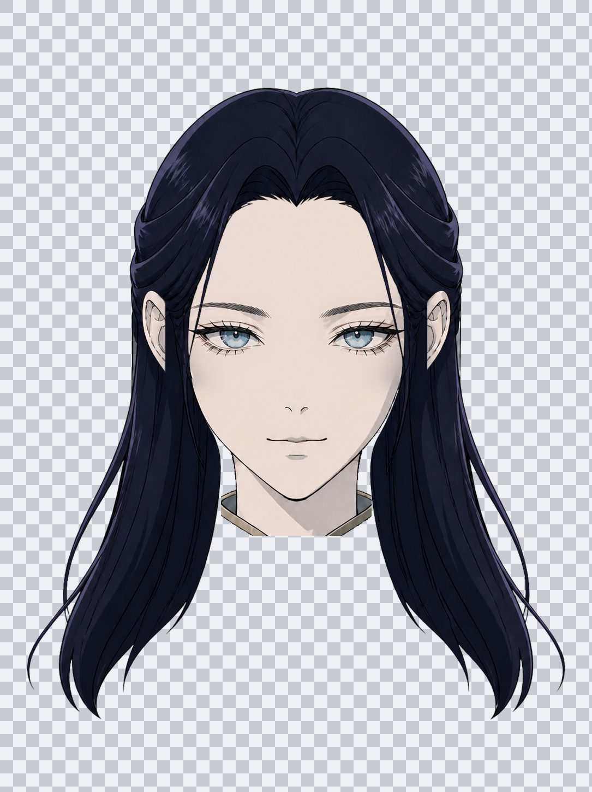

六种脸型 · 一一对应验收
六张均使用同一套圆瞳、中分长直发、画布与五官锚点。每张脸拥有自己的轮廓、鼻子、嘴巴和独立耳层。

01 · oval / 鹅蛋脸
纵向椭圆、均衡下颌、平静鼻嘴
02 · square / 方脸
直侧面、宽下颌与平下巴、宽直鼻
03 · sharp / 尖脸
收窄下颌、尖而柔和的下巴、细直鼻
04 · chubby / 团子脸
最饱满脸颊、圆润下颌、饱满嘴型